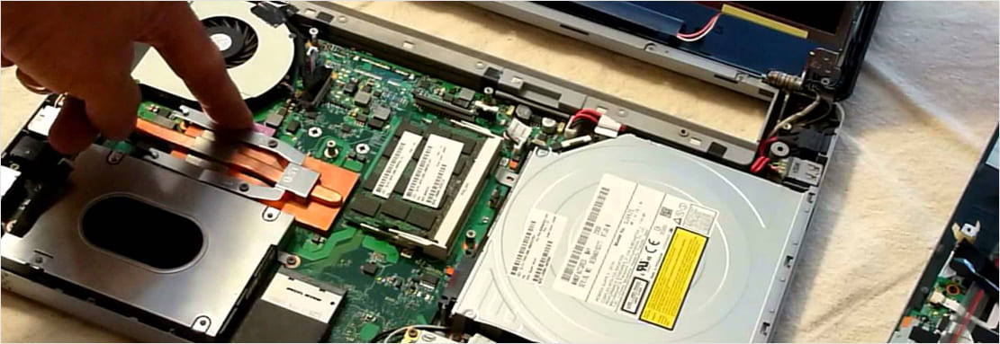

Техническое обслуживание компьютера
Ремонт и ТО компьютера – это услуги сервисных центров. Каждый пользователь ПК в силах самостоятельно почистить системный блок, заменить кулер, поменять термопасту, заменить кабели (шлейфы) и многое другое.
Для починки и осмотра компьютера нужно взять следующие инструменты:
- Крестовая отвертка
- Баллончик со сжатым воздухом или пылесос
Крестовая отвертка
Используя крестовую отвёртку, пользователь откручивает саморезы на крышке компьютера. При помощи пылесоса или баллончика с воздухом проводится очистка от пыли. Нажав на баллончик, можно выдуть лишнюю пыль. Пылесос раздувает и очищает комплектующие системного блока.
Используя крестовую отвёртку, пользователь откручивает саморезы на крышке компьютера. При помощи пылесоса или баллончика с воздухом проводится очистка от пыли. Нажав на баллончик, можно выдуть лишнюю пыль. Пылесос раздувает и очищает комплектующие системного блока.
Используя крестовую отвёртку, пользователь откручивает саморезы на крышке компьютера. При помощи пылесоса или баллончика с воздухом проводится очистка от пыли. Нажав на баллончик, можно выдуть лишнюю пыль. Пылесос раздувает и очищает комплектующие системного блока.
Используя крестовую отвёртку, пользователь откручивает саморезы на крышке компьютера. При помощи пылесоса или баллончика с воздухом проводится очистка от пыли. Нажав на баллончик, можно выдуть лишнюю пыль. Пылесос раздувает и очищает комплектующие системного блока.